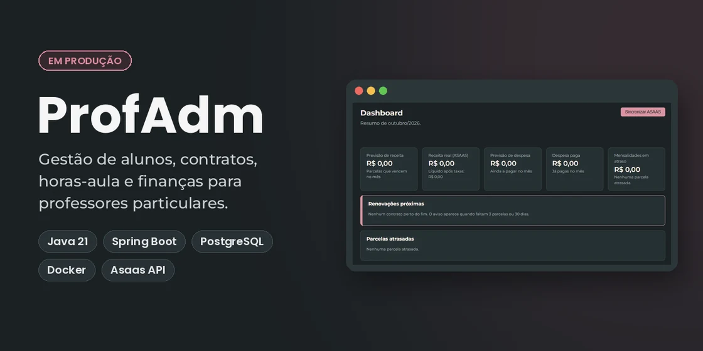
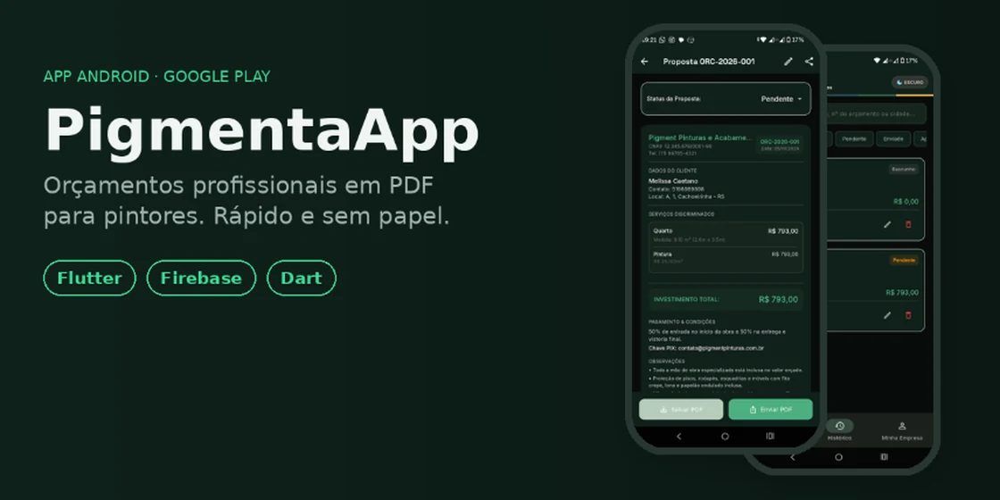

Em produção · SaaS em evolução
ProfAdm
Contratos, horas-aula e cobranças PIX e boleto para professores particulares. Usado no dia a dia por uma professora de inglês.
Java 21 · Spring Boot · PostgreSQL · Asaas
Cachoeirinha, RS · Backend Java · Flutter
Desenvolvedor Java e Flutter. Construo APIs com Spring Boot e sistemas que clientes reais usam todos os dias.

Em produção · SaaS em evolução
Contratos, horas-aula e cobranças PIX e boleto para professores particulares. Usado no dia a dia por uma professora de inglês.

Google Play · Mobile
Orçamentos em PDF para pintores, enviados direto por WhatsApp.
No ar · Cliente real
Site de professora de inglês online, com tema claro e escuro e páginas de serviços.
Extensão · Impacto social
Site de combate à violência doméstica, feito com a Guarda Municipal de Cachoeirinha. Tem botão de saída rápida e controle de tamanho do texto.
Sou analista e desenvolvedor de sistemas em Cachoeirinha (RS), com foco em backend Java, Spring Boot e APIs REST. Também desenvolvo apps mobile com Flutter.
Gosto de projetos que resolvem um problema real. O ProfAdm, por exemplo, nasceu para uma professora que hoje usa o sistema todos os dias. Acredito que código limpo é uma forma de respeito pelos colegas de equipe.
Quer conversar sobre Java, backend ou uma oportunidade? Me chame por e-mail ou LinkedIn.